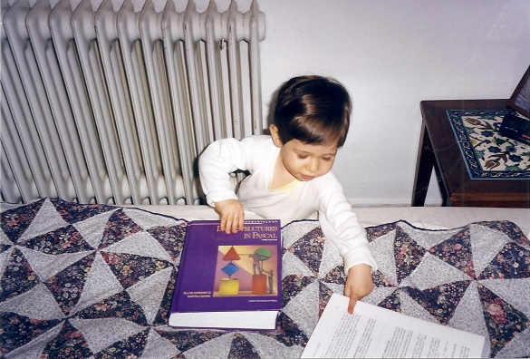

I am a Software Engineer at Google working on YouTube.
Previously, I was the 2024 Grace Hopper fellow in computing sciences at Lawrence Berkeley National Lab. I was part of the Machine Learning & Analytics Group in the Scientific Data Division, focusing on randomized numerical linear algebra for high-performance computing and machine learning for science.
I completed my undergraduate studies at the University of Maryland, College Park, graduating with a dual degree in mathematics (with high honors) and computer science (with honors). My pronouns are he/him.
Contact Information
Email: yotamya is the username, and ucla dot edu is the domain name
James Chapman, Yotam Yaniv, Deanna Needell, "Stratified NMF for Heterogeneous Data." 2023 57th Asilomar Conference on Signals, Systems, and Computers, 614-618.
Yotam Yaniv, Jacob D. Moorman, William Swartworth, Thomas Tu, Daji Landis, Deanna Needell, "Selectable set randomized Kaczmarz." Numerical Linear Algebra with Applications (2022): e2458.

Back in my prime studying 'Data Structures in Pascal' and reading a paper at the same time.